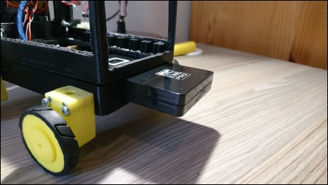
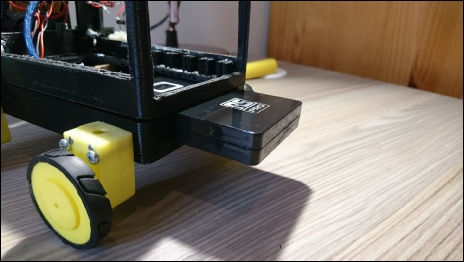
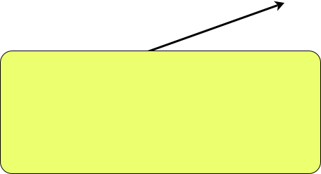
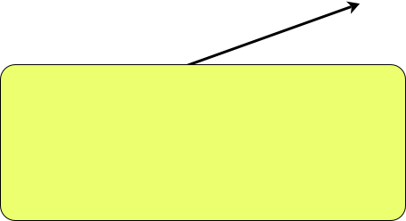
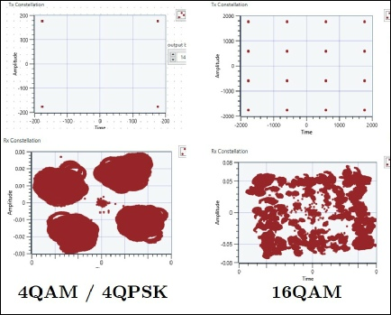
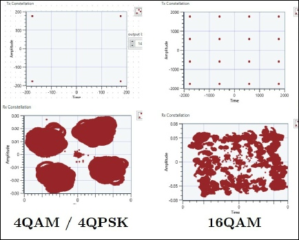

CV Portfolio
Sensor based robotic vehicle: (First Year group project)
 


Tasked with developing a vehicle that can detect and decode signals (such as Radio (RF), Ultrasound, Infrared and Magnetic Fields). The decoded data then needs to be wirelessly transmitted to the user after post-


Sensor Arm: Contains an antenna, hall sensor, photo diodes and other sensors. The sensor arm can be rotated by an onboard motor to improve signal reception.


Post-

Custom Chassis: The case was custom designed on CAD software then 3D printed.

Modular Design: Incorporated a modular design where each circuit board can be changed out when needed. The battery is also user removable to enhance user self-


Hand-
Various HiFi and Electronic System Restorations:
Various projects revolving around repairing and restoring vintage HiFi devices such as Amplifiers and Radios. These are bought faulty for around £1 and provide a fascinating insight into engineering before the Digital revolution.
High Voltage Power Supply (Flyback Converter)
Group collaboration to build a high voltage power supply in order to work on other electricity concepts and carry out experiments.


Voltage Booster: Takes 12 – 24V DC Input then boosts this voltage to 20,000V DC.


Feedback mechanism: Feedback coil takes the input and makes it an high oscillating signal. This is required to drive the push-
‘Fly-
This high voltage power supply has led to other exciting group projects such as building a Tesla coil and Ionic wind generator

Tesla Coil
Ionic wind generator (Solid state wind generator)

Repairing broken mechanism: Repaired several compact cassette players through experimentation and deciphering the circuit. Common issues arise from worn motor belts, faulty analogue amplifiers and unclean read heads.
Above is a Compact Cassette player. An insight into the world of data storage with magnetic tape.

Repairing these systems has given an insight into the inner workings of the electronics inside and into some clever techniques used to add new features.


Digital Era: Moving into the digital era has provided a new insight into data storage through digital means. Gone are the days of magnetic tape. Here is a CD player which uses laser light to retrieve a stored pattern of digital data on a disc.

Digital Signal Processing: Analysing circuits such as data correction circuits and synthesizers have allowed a deeper understanding of the integral Digital signal processing present in these circuits.

Other projects include repairing and restoring a faulty gaming system into working order and understanding how its cooling system works. One reason why these models become faulty is because of CPU overheating.


Rectifying the overheating issue: After some research, it was understood that bad thermal contact with the heat sink caused this issue. This project aimed to upgrade the thermal performance. One way to remove the processor ‘heat spreader’ lid, a technique that is high in risk if done incorrectly.


Modifications: A modification can also be done to increase the airflow into the cooling system. These alterations greatly reduced the internal temperature of the system, leading to a longer life span of the device.
Tsinghua University 2 week Research Project
2-


Teamwork: Something very different from electronics in terms of research however was very fun and exciting, it was an intense 2 weeks. Research was broken up into 5 main sections in which each member carried out.
The report considers many aspects of aviation industry in China in terms of manufacturing of aircraft and air travel infrastructure.
Umut E.
STEM Promotion:
Maintaining an A-


Objectives: Aim was to provide access to as many example questions as possible for students to practice. Contains a variety of past papers and their mark schemes including the optional electronics module introduced for the A-
Analogue/RF (RFIC) Design Project: (Summer 2020 Internship)
Tasked with developing a low-
Potential applications included a buffer stage for an CMOS ADC. Circuit had to be robust and work as expected across all corners. Final design would be implemented in Layout and results presented to Principal Engineers.
Contents
- Analogue/RF (RFIC) Design Project (2020 Internship)
- Electro-
Mechanical Math Aid for Blind People (Second Year Group Project) - High Gain, Low Noise Broadband Amplifier (Lab Project)
- FPGA Synthesizer/Signal Generator & USRP QAM Receiver (Lab Projects)
- Sensor based robotic vehicle (First Year group project)
- Various HiFi and Electronic System Restorations
- High Voltage Power Supply (Flyback Converter)
- Tsinghua University 2 week Research Project
- STEM Promotion & Website
 
Design: Op-
The circuit was configured in a unity gain follower configuration to simulate behaviour if used as a buffer.

Statistical Analysis: Monte-


Layout: Common-

Floor-
Final Routing was then subjected to LVS and DRC tests. A final PEX (XRC) simulation was carried out.

Final Bode Plot: The final bode plot is shown on the left. Final PEX Simulation at all corners resulted in average gain of 80dB at typical corners and minimum of 130 MHz and 80 degrees phase margin whilst maintaining low noise. Final optimisations were made, and results presented to Principal Engineers.
Electro-
During our second-

Enclosure: Final device was enclosed in a solid plastic casing. The tactile elements were dome shaped to help ergonomics and was 3D printed.
Any external buttons had a physical Braille representation engraved onto the device to ease user accessibility.


Battery: Device can be used in a portable environment. A battery system was designed and can easily be user replaced if needed.


Prototypes: Several prototypes were made to validate new methods to move the tactile elements. An initial “development kit” was made for the software team to work on creating an application. The final design used 360-
Internal Mechanism: Stepper Belts and Gears were used. All parts were designed, and 3D printed.

Electronics: Control and power circuitry implemented to accurately control the motors. A built-

Gain Stages: Low noise gain stages used at first stage with supply bypass.
High Gain, Low Noise Broadband Amplifier: (Lab Project)
Tasked with developing high gain (100 dB) and low noise broadband amplifier. Challenging due to limited use of Op-
Filtering: Remove any high frequency noise and get the amplifier within the required passband.


Buffer: To buffer output for heavy loads.


Final Bode Plot: Final unloaded bode plot met required pass-
High Gain with minimal noise: Challenge was to minimise noise. Input signal is 150 uV Amplitude signal (Yellow), output is ~13 V Amplitude signal (Green).
Circuit noise performance was very important in this project.
High Gain with minimal noise: Challenge was to minimise noise. Input signal is 150 uV Amplitude signal (Yellow), output is ~13 V Amplitude signal (Green).
Circuit noise performance was very important in this project.
FPGA Synthesizer/Signal Generator & USRP QAM Receiver: (Lab Projects)
Several experiments and projects using FPGA based devices including a USRP Software Defined Radio (SDR) kit and Altera Cyclone V FPGA development board. Projects included building a signal generator and voice synthesizer used in conjunction with an ADC & DAC on the Cyclone V FPGA. The USRP kit was used with the NI LabView suite in order to create an FM/AM transceiver and a multi-

Building Sine Generator: A sine-


Low Pass: A final low pass removes any high frequency components caused by the DAC process.
 


Software Defined Radio: Modern communication methods were implemented onto the USRP (Programmable Radio) device including techniques to reduce error.

QAM / AM / FM Implementations: A QAM (Quadrature Amplitude Modulation) transceiver was implemented and shown to academics to explain the difficulty of interference and noise immunity as higher rates of QAM are used (16QAM, 64 QAM and so on.)
Top and Bottom graphs represent Transmission and Received signals, respectively.


Building a FPGA Voice Echo Synthesizer: An ADC and DAC were used. The ADC captures the microphone signal and creates an echo of the signal. This is done by storing the audio data within RAM (Memory) and manipulating the signal and later outputting it through the DAC. The final effect is echo-